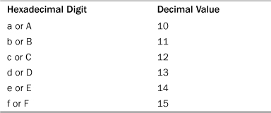
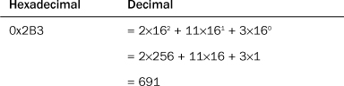
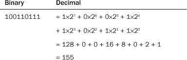
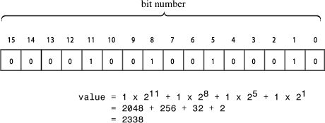
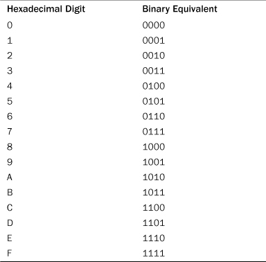

Civilizations have used many systems to represent numbers. Some systems, such as Roman numerals, are ill suited for doing arithmetic. On the other hand, the Hindi number system, modified and transmitted to Europe as the Arabic number system, facilitated calculations for mathematicians, scientists, and merchants. Modern computer number systems are based on the placeholder concept and use of zero that first appeared with the Hindi number system. However, they generalize the principles to other number bases. So although our everyday notation is based on the number 10, as described in the next section, the computing world often uses numbers based on 8 (octal), 16 (hexadecimal), and 2 (binary).
The method we use for writing numbers is based on powers of 10. For example, consider the number 2,468. The 2 represents 2 thousands, the 4 represents 4 hundreds, the 6 represents 6 tens, and the 8 represents 8 ones:
2,468 = 2×1,000 + 4×100 + 6×10 + 8×1
One thousand is 10×10×10, which can be written as 103, or 10 to the 3rd power. Using this notation, you can write the preceding relationship this way:
2,468 = 2×103 + 4×102 + 6×101 + 8×100
Because this number notation is based on powers of 10, we refer to it as base 10, or decimal, notation. You can also use another number as a base. For example, C++ lets you use base 8 (octal) and base 16 (hexadecimal or hex) notation for writing integer numbers. (Note that 100 is 1, as is any nonzero number to the zero power.)
Octal numbers are based on powers of 8, so base 8 notation uses the digits 0–7 in writing numbers. C++ uses a 0 prefix to indicate octal notation. Thus, 0177 is an octal value. You can use powers of 8 to find the equivalent base 10 value:
Because the Unix operating system often uses octal representation of values, C++ and C provide octal notation.
Hexadecimal numbers are based on powers of 16. This means that 10 in hexadecimal represents the value 16 + 0, or 16. To represent the values between 9 and hexadecimal 16, you need a few more digits. Standard hexadecimal notation uses the letters a–f for that purpose. C++ accepts either lowercase or uppercase versions of these characters, as shown in Table A.1.

C++ uses 0x or 0X notation to indicate hexadecimal notation. Thus, 0x2B3 is a hexadecimal value. To find the decimal equivalent of 0x2B3, you can evaluate the powers of 16:

Hardware documentation often uses hexadecimal notation to represent values such as memory locations and port numbers.
Whether you use decimal, octal, or hexadecimal notation for writing an integer, the computer stores it as a binary, or base 2, value. Binary notation uses just two digits, 0 and 1. For example, 10011011 is a binary number. Note, however, that C++ doesn’t provide for writing a number in binary notation. Binary numbers are based on powers of 2:

Binary notation makes a nice match to computer memory, in which each individual unit, called a bit, can be set to off or on. You just identify the off setting with 0 and the on setting with 1. Memory is commonly organized in units called bytes or octets, with each byte being 8 bits. (As noted in Chapter 2 “Setting Out to C++,” a C++ byte isn’t necessarily 8 bits, but this appendix will follow the common practice of using byte to mean octet.) The bits in a byte are numbered corresponding to the associated power of 2. Thus, the rightmost bit is bit number 0, the next bit is bit 1, and so on. For example, Figure A.1 represents a 2-byte integer.
Figure A.1. A 2-byte integer value.

Hex notation is often used to provide a more convenient view of binary data, such as memory addresses or integers holding bit-flag settings. The reason for this is that each hexadecimal digit corresponds to a 4-bit unit. Table A.2 shows this correspondence.
Table A.2. Hexadecimal Digits and Binary Equivalents

To convert a hex value to binary, you just replace each hex digit with the corresponding binary equivalent. For example, the hex number 0xA4 corresponds to binary 1010 0100. Similarly, you can easily convert binary values to hex notation by converting each 4-bit unit into the equivalent hex digit. For example, the binary value 1001 0101 becomes 0x95.